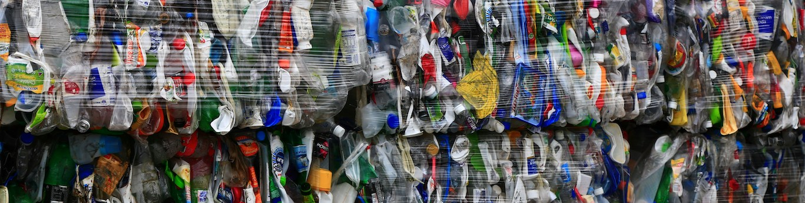

library(tidyverse)
library(skimr)
library(plotly)
library(here)
library(janitor)
library(tidymodels)
tidymodels_prefer()Exploring the relationship between trash processed by Mr. Trash Wheel and precipitation
data wrangling
data visualization
tidytuesday
plotly
Tableau
A contribution to the 2024-03-05 #tidytuesday social data project

👋 Say hello to Mr. Trash Wheel and friends
This week’s #tidytuesday we’re looking into data related to Mr. Trash Wheel and friends. Mr. Trash Wheel is a semi-autonomous trash interceptor, who’s main purpose is to collect trash floating into the Baltimore Inner Harbor. Mr. Trash Wheel is a pretty neat invention. If you’re interested in how it works, check out the information found here.
My curiosity peaked when I came across the statement that most of the trash collected by Mr. Trash wheel is the result of water runoff, and not from people disposing trash directly into the habor. So, I wanted to explore the relationship between precipitation and the amount of trash being collected by Mr. Trash Wheel and friends for my contribution this week.
In this post, I created my visualizations using plotly and Tableau.
data_trash <- read_csv(
here(
"blog",
"posts",
"2024-03-12-tidytuesday-2024-03-05-mr-trash-wheel",
"trashwheel.csv"
)
)Rows: 993 Columns: 16
── Column specification ────────────────────────────────────────────────────────────────────────────
Delimiter: ","
chr (4): ID, Name, Month, Date
dbl (12): Dumpster, Year, Weight, Volume, PlasticBottles, Polystyrene, CigaretteButts, GlassBott...
ℹ Use `spec()` to retrieve the full column specification for this data.
ℹ Specify the column types or set `show_col_types = FALSE` to quiet this message.data_balt_precip <- read_csv(
here(
"blog",
"posts",
"2024-03-12-tidytuesday-2024-03-05-mr-trash-wheel",
"balt_precip.csv"
)
)Rows: 10 Columns: 13
── Column specification ────────────────────────────────────────────────────────────────────────────
Delimiter: ","
dbl (13): year, january, february, march, april, may, june, july, august, september, october, no...
ℹ Use `spec()` to retrieve the full column specification for this data.
ℹ Specify the column types or set `show_col_types = FALSE` to quiet this message.Data description
The data contains observations related to trash collected from 2014 to 2023 by multiple trash wheels. The Baltimore precipitation data came from a tool found here. I simply just copy pasted this data into a Google sheet and saved it as a .csv file. Further wrangling steps for both data sets are included below.
To get a better sense of what’s in the data, I did a quick glimpse() and skim() of both the data_trash and data_balt_precip data sets.
glimpse(data_trash)Rows: 993
Columns: 16
$ ID <chr> "mister", "mister", "mister", "mister", "mister", "mister", "mister", "mist…
$ Name <chr> "Mister Trash Wheel", "Mister Trash Wheel", "Mister Trash Wheel", "Mister T…
$ Dumpster <dbl> 1, 2, 3, 4, 5, 6, 7, 8, 9, 10, 11, 12, 13, 14, 15, 16, 17, 18, 19, 20, 21, …
$ Month <chr> "May", "May", "May", "May", "May", "May", "May", "May", "June", "June", "Ju…
$ Year <dbl> 2014, 2014, 2014, 2014, 2014, 2014, 2014, 2014, 2014, 2014, 2014, 2014, 201…
$ Date <chr> "5/16/2014", "5/16/2014", "5/16/2014", "5/17/2014", "5/17/2014", "5/20/2014…
$ Weight <dbl> 4.31, 2.74, 3.45, 3.10, 4.06, 2.71, 1.91, 3.70, 2.52, 3.76, 3.43, 4.17, 5.1…
$ Volume <dbl> 18, 13, 15, 15, 18, 13, 8, 16, 14, 18, 15, 19, 15, 15, 15, 15, 13, 15, 15, …
$ PlasticBottles <dbl> 1450, 1120, 2450, 2380, 980, 1430, 910, 3580, 2400, 1340, 740, 950, 530, 84…
$ Polystyrene <dbl> 1820, 1030, 3100, 2730, 870, 2140, 1090, 4310, 2790, 1730, 869, 1140, 630, …
$ CigaretteButts <dbl> 126000, 91000, 105000, 100000, 120000, 90000, 56000, 112000, 98000, 130000,…
$ GlassBottles <dbl> 72, 42, 50, 52, 72, 46, 32, 58, 49, 75, 38, 45, 58, 62, 64, 56, 47, 65, 63,…
$ PlasticBags <dbl> 584, 496, 1080, 896, 368, 672, 416, 1552, 984, 448, 344, 520, 224, 344, 432…
$ Wrappers <dbl> 1162, 874, 2032, 1971, 753, 1144, 692, 3015, 1988, 1066, 544, 727, 361, 631…
$ SportsBalls <dbl> 7, 5, 6, 6, 7, 5, 3, 6, 6, 7, 6, 8, 6, 6, 6, 6, 5, 6, 6, 7, 6, 6, 6, 5, 6, …
$ HomesPowered <dbl> 0, 0, 0, 0, 0, 0, 0, 0, 0, 0, 0, 0, 0, 0, 0, 0, 0, 0, 0, 0, 0, 0, 0, 0, 0, …glimpse(data_balt_precip)Rows: 10
Columns: 13
$ year <dbl> 2014, 2015, 2016, 2017, 2018, 2019, 2020, 2021, 2022, 2023
$ january <dbl> 2.71, 3.89, 3.50, 2.69, 1.00, 3.15, 3.11, 2.15, 4.27, 1.68
$ february <dbl> 4.58, 2.24, 5.70, 1.46, 5.30, 3.64, 2.98, 4.85, 2.31, 2.18
$ march <dbl> 4.38, 4.67, 2.10, 3.82, 2.25, 4.14, 3.05, 3.90, 3.13, 1.49
$ april <dbl> 8.60, 4.30, 1.31, 3.52, 3.20, 1.46, 5.52, 2.07, 3.92, 4.12
$ may <dbl> 3.35, 2.10, 5.24, 5.64, 8.17, 5.51, 1.76, 3.63, 5.39, 0.55
$ june <dbl> 3.95, 13.09, 3.20, 1.40, 4.77, 2.95, 5.95, 2.75, 2.95, 4.31
$ july <dbl> 2.80, 3.49, 6.09, 7.11, 16.73, 3.85, 3.43, 3.65, 6.25, 6.84
$ august <dbl> 7.90, 2.46, 3.96, 4.60, 3.84, 2.39, 11.81, 4.36, 3.71, 3.73
$ september <dbl> 3.21, 3.25, 4.36, 1.95, 9.19, 0.16, 4.48, 6.04, 3.35, 6.27
$ october <dbl> 4.16, 3.40, 0.78, 2.99, 2.69, 6.21, 4.36, 5.24, 4.66, 1.13
$ november <dbl> 3.36, 2.42, 1.51, 2.15, 8.14, 1.10, 6.35, 1.33, 2.44, 2.80
$ december <dbl> 3.58, 5.85, 2.77, 0.95, 6.54, 3.57, 4.58, 0.82, 4.80, 7.16skim(data_trash)| Name | data_trash |
| Number of rows | 993 |
| Number of columns | 16 |
| _______________________ | |
| Column type frequency: | |
| character | 4 |
| numeric | 12 |
| ________________________ | |
| Group variables | None |
Variable type: character
| skim_variable | n_missing | complete_rate | min | max | empty | n_unique | whitespace |
|---|---|---|---|---|---|---|---|
| ID | 0 | 1 | 6 | 9 | 0 | 4 | 0 |
| Name | 0 | 1 | 18 | 21 | 0 | 4 | 0 |
| Month | 0 | 1 | 3 | 9 | 0 | 14 | 0 |
| Date | 0 | 1 | 6 | 10 | 0 | 623 | 0 |
Variable type: numeric
| skim_variable | n_missing | complete_rate | mean | sd | p0 | p25 | p50 | p75 | p100 | hist |
|---|---|---|---|---|---|---|---|---|---|---|
| Dumpster | 0 | 1.00 | 230.88 | 185.82 | 1.00 | 73.00 | 176.00 | 381.00 | 629.00 | ▇▅▂▂▂ |
| Year | 0 | 1.00 | 2019.57 | 2.75 | 2014.00 | 2018.00 | 2020.00 | 2022.00 | 2023.00 | ▃▃▅▆▇ |
| Weight | 0 | 1.00 | 2.97 | 0.84 | 0.61 | 2.45 | 3.04 | 3.53 | 5.62 | ▁▅▇▃▁ |
| Volume | 0 | 1.00 | 14.92 | 1.61 | 5.00 | 15.00 | 15.00 | 15.00 | 20.00 | ▁▁▁▇▁ |
| PlasticBottles | 1 | 1.00 | 2219.33 | 1650.45 | 0.00 | 987.50 | 1900.00 | 2900.00 | 9830.00 | ▇▆▁▁▁ |
| Polystyrene | 1 | 1.00 | 1436.87 | 1832.43 | 0.00 | 240.00 | 750.00 | 2130.00 | 11528.00 | ▇▂▁▁▁ |
| CigaretteButts | 1 | 1.00 | 13728.12 | 24049.61 | 0.00 | 2900.00 | 4900.00 | 12000.00 | 310000.00 | ▇▁▁▁▁ |
| GlassBottles | 251 | 0.75 | 20.96 | 15.26 | 0.00 | 10.00 | 18.00 | 28.00 | 110.00 | ▇▃▁▁▁ |
| PlasticBags | 1 | 1.00 | 984.00 | 1412.34 | 0.00 | 240.00 | 540.00 | 1210.00 | 13450.00 | ▇▁▁▁▁ |
| Wrappers | 144 | 0.85 | 2238.76 | 2712.85 | 0.00 | 880.00 | 1400.00 | 2490.00 | 20100.00 | ▇▁▁▁▁ |
| SportsBalls | 364 | 0.63 | 13.59 | 9.74 | 0.00 | 6.00 | 12.00 | 20.00 | 56.00 | ▇▆▂▁▁ |
| HomesPowered | 0 | 1.00 | 45.85 | 18.23 | 0.00 | 38.00 | 49.00 | 58.00 | 94.00 | ▂▂▇▅▁ |
skim(data_balt_precip)| Name | data_balt_precip |
| Number of rows | 10 |
| Number of columns | 13 |
| _______________________ | |
| Column type frequency: | |
| numeric | 13 |
| ________________________ | |
| Group variables | None |
Variable type: numeric
| skim_variable | n_missing | complete_rate | mean | sd | p0 | p25 | p50 | p75 | p100 | hist |
|---|---|---|---|---|---|---|---|---|---|---|
| year | 0 | 1 | 2018.50 | 3.03 | 2014.00 | 2016.25 | 2018.50 | 2020.75 | 2023.00 | ▇▇▇▇▇ |
| january | 0 | 1 | 2.82 | 1.00 | 1.00 | 2.28 | 2.91 | 3.41 | 4.27 | ▂▅▅▇▅ |
| february | 0 | 1 | 3.52 | 1.50 | 1.46 | 2.26 | 3.31 | 4.78 | 5.70 | ▇▅▂▅▅ |
| march | 0 | 1 | 3.29 | 1.07 | 1.49 | 2.45 | 3.47 | 4.08 | 4.67 | ▅▂▅▅▇ |
| april | 0 | 1 | 3.80 | 2.15 | 1.31 | 2.35 | 3.72 | 4.26 | 8.60 | ▆▇▃▁▂ |
| may | 0 | 1 | 4.13 | 2.28 | 0.55 | 2.41 | 4.44 | 5.48 | 8.17 | ▃▃▂▇▂ |
| june | 0 | 1 | 4.53 | 3.26 | 1.40 | 2.95 | 3.58 | 4.65 | 13.09 | ▇▆▁▁▂ |
| july | 0 | 1 | 6.02 | 4.09 | 2.80 | 3.53 | 4.97 | 6.69 | 16.73 | ▇▆▁▁▂ |
| august | 0 | 1 | 4.88 | 2.87 | 2.39 | 3.71 | 3.90 | 4.54 | 11.81 | ▇▂▁▁▁ |
| september | 0 | 1 | 4.23 | 2.51 | 0.16 | 3.22 | 3.86 | 5.65 | 9.19 | ▅▇▅▅▂ |
| october | 0 | 1 | 3.56 | 1.73 | 0.78 | 2.77 | 3.78 | 4.58 | 6.21 | ▅▂▅▇▅ |
| november | 0 | 1 | 3.16 | 2.30 | 1.10 | 1.67 | 2.43 | 3.22 | 8.14 | ▇▂▁▁▁ |
| december | 0 | 1 | 4.06 | 2.16 | 0.82 | 2.97 | 4.08 | 5.59 | 7.16 | ▅▂▇▅▅ |
Looking further into the data, I noticed a few things of note. Here’s some things to keep in mind:
- There are missing data (e.g.,
NAs) within several variables:PlasticBottles,Polystyrene,CigaretteButts,GlassBottles,PlasticBags,Wrappers, andSportsBalls. The documentation didn’t reference why these were missing and since I wasn’t using these for my contribution, I didn’t dig any further. - The month has an issue with capitalization. Some string formatting should fix this issue, though I’m not using this column for my contribution.
- The
Datecolumn needed to be transformed into adate. This can be addressed by using some functions from thelubridatepackage.
Data wrangling
Now that we have a better sense of the data, let’s wrangle it. Below is the code to wrangle both the data_balt_precip and data_trash data sets. Since my precipitation data was aggregated by month, I decided to aggregate the trash data by month.
Note
data_balt_precip <- data_balt_precip |>
pivot_longer(cols = january:december, names_to = "month", values_to = "precip") |>
mutate(
month = match(month, str_to_lower(month.name)),
day = 1,
month_date = ymd(str_c(year, month, day, sep = "-"))
) |>
select(
month_date,
precip
)data_trash <- data_trash |>
clean_names() |>
mutate(
id,
name,
date = mdy(date),
month_date = floor_date(date, "month"),
dumpster,
name = str_to_lower(name),
weight,
volume,
.keep = "none"
) data_trash_summ <- data_trash |>
group_by(month_date) |>
summarise(
total_weight = sum(weight),
total_volume = sum(volume)
) |>
left_join(data_balt_precip)Joining with `by = join_by(month_date)`min(data_trash_summ$month_date)[1] "2014-05-01"max(data_trash_summ$month_date)[1] "2023-12-01"What is the relationship between rainfall and the weight and volume of trash processed by the trash wheels?
To explore this relationship, I created two scatter plots. The first plot included precipitation and total weight. The second included volume and precipitation. I did this because weight and volume represent different things. Here’s the code to create the two scatter plots using plotly:
plot_ly(
data = data_trash_summ,
x = ~precip,
y = ~total_weight,
type = "scatter",
mode = "markers",
marker = list(
size = 10,
color = "#6495ED",
line = list(
color = "#151B54",
width = 2
)
),
text = ~paste(
month_date,
"<br>Precipitation (inches): ", precip,
"<br>Weight (tons): ", total_weight
),
hoverinfo = "text"
) |>
plotly::layout(
title = list(
text = "<b>More precipitation is related to heavier amounts of trash for Mr. Trash Wheel and friends to process </b>",
font = list(size = 18),
xanchor = "center"
),
yaxis = list(
title = "Total weight of trash (tons)/month",
titlefont = list(size = 14)
),
xaxis = list(
title = "Total precipitation in Baltimore (inches)/month",
titlefont = list(size = 14)
),
font = list(family = "arial", size = 18, face = "bold")
)plot_ly(
data = data_trash_summ,
x = ~precip,
y = ~total_volume,
type = "scatter",
mode = "markers",
marker = list(
size = 10,
color = "#FFAA33",
line = list(
color = "#151B54",
width = 2
)
),
text = ~paste(
month_date,
"<br>Precipitation (inches): ", precip,
"<br>Volume (cubic yards): ", total_volume
),
hoverinfo = "text"
) |>
plotly::layout(
title = list(
text = "<b>More precipitation is related to a greater volume of trash for Mr. Trash Wheel and friends to process</b>",
font = list(size = 18),
xanchor = "center"
),
yaxis = list(
title = "Total volume of trash (cubic yards)/month",
titlefont = list(size = 14)
),
xaxis = list(
title = "Total precipitation in Baltimore (inches)/month",
titlefont = list(size = 14)
),
font = list(family = "arial", size = 18, face = "bold")
)Looking at the individual observations, I had a hard time fathoming how much trash Mr. Trash Wheel and friends were processing. So, here’s a video giving you a sense of dimension of how much trash is really being collected–it’s a lot once you put it into perspective. I mean, in one month, the trash wheels processed nearly 25 of these 20 cubic yard dumpsters worth of trash. If you’ve ever seen these dumpters in real-life, they’re huge.
Although upon visual inspection it seems a positive relationship is present for both weight and volume of trash, I wanted to further quantify this relationship using a linear model. To do this, I utilized tidymodels to create two simple linear models, one for volume and the other for weight of trash.
lm_mdl <- linear_reg() |>
set_engine("lm")volume_mdl <-
lm_mdl |>
fit(total_volume ~ precip, data = data_trash_summ)
tidy(volume_mdl)# A tibble: 2 × 5
term estimate std.error statistic p.value
<chr> <dbl> <dbl> <dbl> <dbl>
1 (Intercept) 65.4 16.8 3.90 0.000167
2 precip 16.0 3.59 4.47 0.0000186weight_mdl <-
lm_mdl |>
fit(total_weight ~ precip, data = data_trash_summ)
tidy(weight_mdl)# A tibble: 2 × 5
term estimate std.error statistic p.value
<chr> <dbl> <dbl> <dbl> <dbl>
1 (Intercept) 11.6 3.68 3.16 0.00200
2 precip 3.53 0.785 4.49 0.0000172Both models indicate a statistically significant positive relationship between precipitation, volume, and weight of trash processed. In fact, for every additional inch of precipitation a month in Baltimore, the volume of trash processed increases by 16 cubic yards and the weight of trash increases by 3.53 tons.
The bottom line, throw your trash away properly. It has down stream effects, literally … no pun intended.
An attempt using Tableau
To further practice my data visualization tool skills, I recreated these plots using Tableau. You can view this version by clicking here.
Reuse
Citation
BibTeX citation:
@misc{berke2024,
author = {Berke, Collin K},
title = {Exploring the Relationship Between Trash Processed by {Mr.}
{Trash} {Wheel} and Precipitation},
date = {2024-03-12},
langid = {en}
}
For attribution, please cite this work as:
Berke, Collin K. 2024. “Exploring the Relationship Between Trash
Processed by Mr. Trash Wheel and Precipitation.” March 12, 2024.